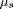
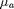
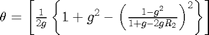
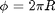
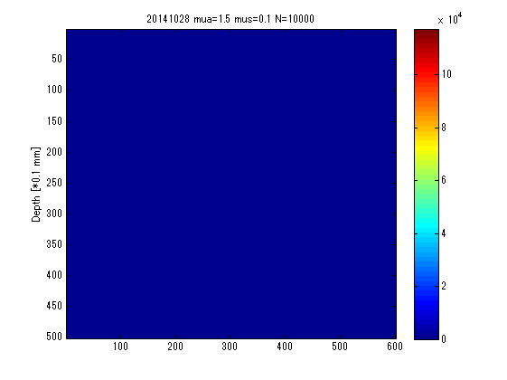

Ray trace
Contents
Ray trace simulation
l[mm]:total light path length
mus[mm-1]:scatter coefficient 
mua[mm-1]:absorption coefficient 
g:anisotropic scatter coefficient (-1 to 1)
L[mm]:light path length in one step
theta[rad]:angle of light path to z axis which is culculated by 
phi[rad]:angle of light path to xy surface, 
W:light intensity
r,z and R,Z:cylindrical cordinate of photon and accumulation of each cordinates
initialization
%clear % % plot(0,0,'rx') % xlabel('r [mm]'); % ylabel('z [mm]'); % axis equal; % grid on; % hold on;
Define const
N = 10000; endR = zeros(N,1); endZ = zeros(N,1); maxZ = zeros(N,1); returned = 0; mus = 0.1; mua = 1.5; g = 0.9; W0 = 10000; cordr = -30:0.1:30; cordz = 0:0.1:50; counter= zeros(length(cordz),length(cordr));
Monte Carlo simulation
bar = waitbar(0,'Please wait...'); for i = 1:N L = 0; theta = 0; phi = 0; r = 0; z = 0; R = 0; Z = 0; W = W0; ixr = 0; ixz = 0; while z >= 0 && z < 50 && W > W0*0.05 l = abs(log(rand))/(mus+mua); theta = theta + ... acos(1/(2*g)*(1+g^2-((1-g^2)/(1+g-2*g*rand))^2)); phi = 2*pi*rand; L = L + l; r = r + l*sin(phi); z = z + l*cos(theta); R = [R,r]; Z = [Z,z]; if z > 0 returned = [returned,i]; for j = 1:length(R) ixr = find(int16(cordr*10)==round(R(j)*10)); ixz = find(int16(cordz*10)==round(Z(j)*10)); counter(ixz,ixr) = counter(ixz,ixr) + 1; end end W = W0*exp(-mua*l); end % max penetration depth maxZ(i) = max(Z); endR(i) = R(end); endZ(i) = Z(end); % % plot % plot(R,Z); % plot(R(end),Z(end),'r.','markersize',5,'linewidth',3); % axis equal; % grid on waitbar(i/N) end returned = unique(returned); depth = maxZ(find(returned)); close(bar) figure; imagesc(counter); title(strcat(datestr(now,'yyyymmdd'),' mua=',num2str(mua),' mus=',num2str(mus),' N=',num2str(N))); ylabel('Depth [*0.1 mm]') colorbar; %sendmail('hdkkato453@gmail.com','シミュレーション終了','シミュレーションが終わりました。') % culiculate mean depth meanZ = mean(maxZ(maxZ<50));